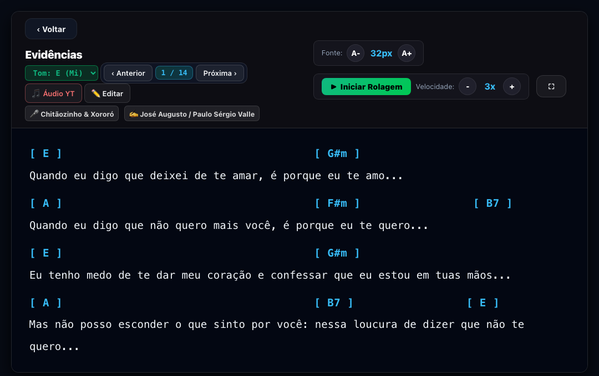
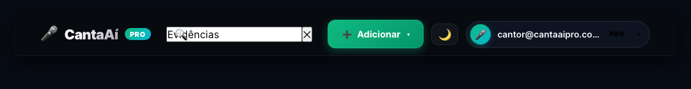
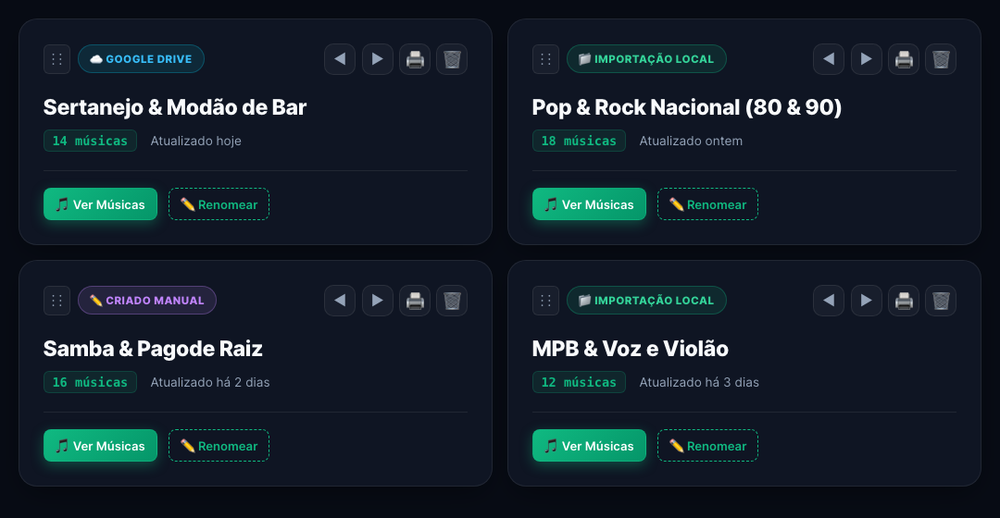
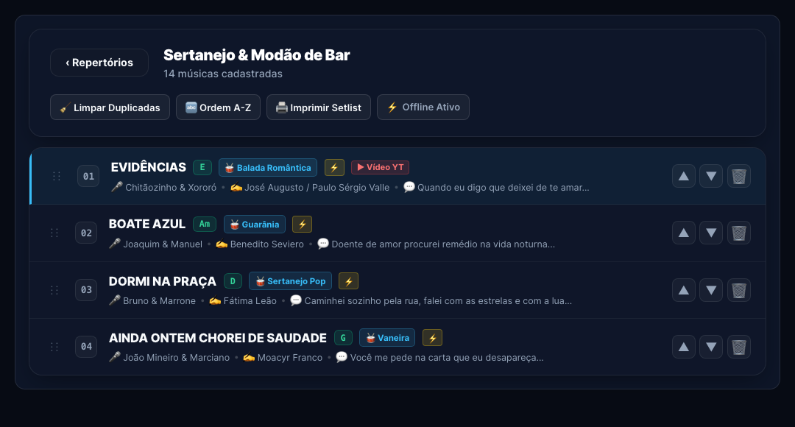
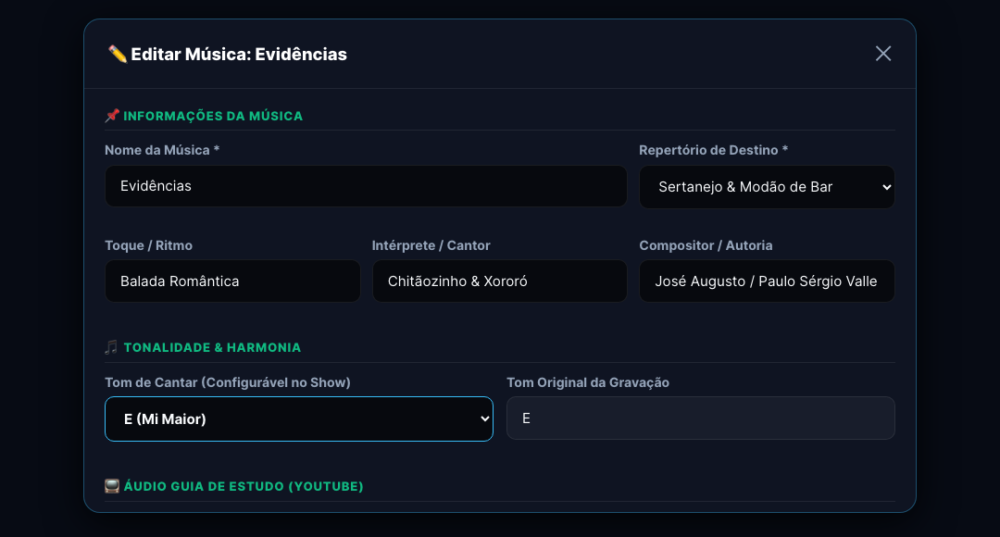
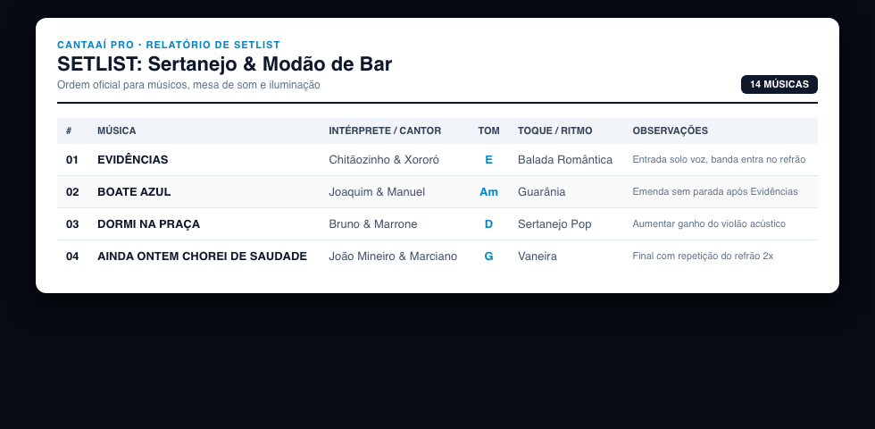

📖 GUIA PRÁTICO PASSO A PASSO
🎤 CantaAí PRO
Manual do Usuário para Cantores e Músicos
Aprenda a organizar seus repertórios por estilos musicais, importar cifras com facilidade, mudar o tom em tempo real e usar o teleprompter com rolagem contínua em seus ensaios e apresentações ao vivo.

🔍 Visualização Real: Leitura clara da música "Evidências" com acordes destacados e rolagem suave automática.
📑 O que você vai aprender neste manual:
1 Barra de Comando e Busca Rápida
2 Repertórios por Estilos Musicais
3 Lista de Músicas e Organização
4 Como Usar o Teleprompter ao Vivo
5 Como Mudar o Tom em 1 Clique
6 Cadastro, Edição e Impressão
1. Visão Geral da Barra Superior
Assim que você abre o CantaAí PRO, o topo da tela concentra todas as ferramentas essenciais para navegar, encontrar suas músicas rapidamente e adicionar novos repertórios sem complicações.

📸 Tela Real: Cabeçalho oficial com campo de busca inteligente, botão de Adicionar e perfil do usuário.
🔍 Como funciona cada botão do topo:
1. Busca Instantânea de Músicas e Repertórios
Clique no campo
"Buscar repertório ou música..." e digite qualquer trecho do nome da música, cantor ou compositor. Conforme você digita, o sistema filtra os resultados na hora, sem precisar apertar Enter.
2. Botão Verde "+ Adicionar"
Ao clicar no botão verde
"+ Adicionar", um menu se abre com 4 opções fáceis:
- Criar Repertório: Cria uma pasta temática (ex: Sertanejo, Pop Rock, Samba).
- Criar Música Manual: Abre a tela para digitar ou colar a letra e os acordes.
- Importar Arquivos (Local): Puxe arquivos do seu computador ou celular (Word .docx, PDF ou texto).
- Importar do Google Drive: Conecte sua pasta do Drive para trazer dezenas de músicas juntas.
🌙 Alternador de Tema
Clique no ícone da Lua (🌙) para alternar entre o Modo Escuro (fundo preto anti-reflexo) e o Modo Claro. O Modo Escuro é ideal para ambientes com pouca luz.
👤 Perfil e Assinatura
No canto direito, você visualiza seu e-mail e o selo PRO. Clicando ali, você acessa os ajustes da sua conta e o status da sua assinatura.
2. Organização de Repertórios por Estilos
Para que você nunca fique perdido antes ou durante uma apresentação, o CantaAí PRO organiza suas músicas em blocos temáticos. Você pode ter quantos repertórios quiser, separados pelos estilos que você toca.

📸 Tela Real: Painel com cards organizados: Sertanejo & Modão, Pop & Rock Nacional, Samba & Pagode e MPB.
📋 O que tem em cada cartão de repertório:
🏷️ Selo de Origem
Mostra se o repertório veio do Google Drive, de Importação Local (Word/PDF) ou se foi Criado Manualmente.
⋮⋮ Organizar Ordem
Segure o ícone ⋮⋮ e arraste para colocar os repertórios que você mais usa primeiro, ou use as setinhas ◀ e ▶ no topo do cartão.
🎵 Abrir e Ver Músicas
Clique no botão verde
"🎵 Ver Músicas" (ou em qualquer parte do cartão) para abrir a lista completa das músicas daquele repertório.
✏️ Renomear e Gerenciar
Para mudar o nome do repertório (por exemplo, de
"Sertanejo" para
"Show de Sexta no Bar"), basta clicar em
"✏️ Renomear", digitar o novo nome e confirmar.
3. A Lista de Músicas do Repertório
Ao abrir um repertório, você entra na tela com todas as músicas cadastradas. Cada linha exibe o número de ordem, o título em letras maiúsculas legíveis, o tom de cantar e o ritmo musical.

📸 Tela Real: Repertório Sertanejo com "Evidências", "Boate Azul", "Dormi na Praça" e "Ainda Ontem Chorei de Saudade".
⚡ Ferramentas da Barra do Repertório:
‹ Repertórios
Volta com um clique para a tela principal de todos os seus repertórios.
🧹 Limpar Duplicadas
Remove músicas com o mesmo nome que você possa ter importado por engano.
🔤 Ordem A-Z
Organiza todas as músicas do repertório em ordem alfabética instantaneamente.
⚡ Offline Ativo
Garante que todas as cifras deste repertório estão salvas na memória do seu aparelho.
👆 Como Iniciar a Leitura:
Para abrir uma música no teleprompter,
basta clicar em cima da linha da música. As setinhas
▲ e ▼ no canto direito servem para subir ou descer a música na ordem do show.
4. O Teleprompter em Ação
Esta é a tela principal que você usará durante seus ensaios e apresentações ao vivo. Os acordes aparecem em cor ciano vibrante bem em cima da letra, com fundo escuro de alto contraste para não cansar a vista.
📸 Tela Real: Música "Evidências" pronta para leitura com controle de fonte (32px), velocidade (3x) e rolagem contínua.
🎛️ Como Usar os Controles do Teleprompter:
▶ Iniciar / Pausar a Rolagem Contínua
Clique no botão verde
"▶ Iniciar Rolagem". O texto começará a descer suavemente na tela. Para pausar no meio da música, basta dar um toque na tela ou apertar a tecla
Espaço.
🔠 Ajuste do Tamanho da Letra
Clique em [A-] para diminuir ou [A+] para aumentar o tamanho da letra. O número no centro (ex: 32px) mostra o tamanho atual.
⏩ Controle de Velocidade
Use os botões [-] e [+] para deixar a rolagem mais lenta ou mais rápida, acompanhando o andamento natural da música.
⏭️ Próxima Música ou Anterior
Use os botões
"‹ Anterior" e
"Próxima ›" no topo para trocar de música rapidamente sem precisar sair do teleprompter. O indicador
1 / 14 mostra a posição da música no repertório.
5. Como Mudar o Tom na Hora do Show
Se o cantor convidado cantar em outro tom ou se a sua voz estiver cansada e você precisar descer meio tom, o CantaAí PRO resolve isso com um único clique, sem você precisar pensar nem fazer contas harmônicas de cabeça.
🎵 Como Fazer a Troca de Tom:
No topo da tela do teleprompter, localize o seletor onde está escrito o tom atual (por exemplo,
"Tom: E (Mi)"). Clique nele para abrir a lista completa de tons.
Tons Maiores Disponíveis
C (Dó) • C# / Db • D (Ré) • D# / Eb
E (Mi) • F (Fá) • F# / Gb • G (Sol)
G# / Ab • A (Lá) • A# / Bb • B (Si)
Tons Menores Disponíveis
Cm • C#m • Dm • D#m
Em • Fm • F#m • Gm
G#m • Am • Bbm • Bm
🎸 Exemplo Prático com a Música "Evidências":
TOM ORIGINAL: E (Mi Maior)
[ E ] [ G#m ]
Quando eu digo que deixei de te amar...
[ A ] [ B7 ]
Quando eu digo que não quero mais você...
TRANSPORTO PARA: D (Ré Maior)
[ D ] [ F#m ]
Quando eu digo que deixei de te amar...
[ G ] [ A7 ]
Quando eu digo que não quero mais você...
⚡ Inteligência Harmônica Automática
Todos os acordes da música inteira mudam instantaneamente. Acordes com sétima (ex: B7 virou A7), notas menores e variações são recalculados com precisão absoluta.
6. Como Cadastrar e Editar uma Música
Para ajustar a letra, corrigir um acorde ou adicionar o link do YouTube para ensaiar, clique no botão "✏️ Editar" no teleprompter ou selecione "+ Criar Música Manual" no menu do topo.

📸 Tela Real: Tela de edição com campos de nome, repertório, ritmo, cantor, compositor e link de áudio guia.
📝 Campos Importantes na Edição:
📌 Nome & Repertório
Coloque o título da música e escolha em qual repertório ela vai ficar (ex: Sertanejo & Modão).
🥁 Toque / Ritmo
Anote o ritmo para orientar a banda (ex: Balada, Guarânia, Vaneira, Samba, Rock 128 BPM).
🎵 Tom de Cantar
Defina a tonalidade que você costuma cantar para ela sempre abrir pronta para você.
📺 Áudio Guia (YouTube)
Cole o link do YouTube da gravação oficial para ensaiar o arranjo e as convenções antes de cantar.
💾 Salvar Alterações
Terminou de editar? Clique no botão verde
"💾 Salvar Alterações". A música é atualizada imediatamente no seu dispositivo e na nuvem.
7. Impressão de Setlists e Segurança Offline
O CantaAí PRO foi construído com duas prioridades máximas: facilitar a comunicação com os outros músicos da banda e garantir que o sistema nunca falhe durante uma apresentação ao vivo.
🖨️ Como Imprimir o Setlist do Show:
Dentro de qualquer repertório, clique no botão "🖨️ Imprimir Setlist". O sistema gera uma folha limpa, organizada e pronta para imprimir ou salvar em PDF para enviar no WhatsApp dos músicos ou da equipe técnica.

📸 Tela Real: Tabela limpa com número da música, título, intérprete, tom, ritmo e espaço para anotações técnicas.
🛡️ Segurança Offline: E se a internet cair durante o show?
Funcionamento 100% Offline Garantido
Todas as suas cifras, letras e repertórios ficam armazenados na memória física do seu tablet, celular ou computador. Se o Wi-Fi do local oscilar ou os dados móveis caírem no meio da apresentação,
o teleprompter continua funcionando perfeitamente sem nenhuma interrupção.
🔄 Sincronização Automática
Quando você voltar a ter internet, todas as edições e novas músicas sobem automaticamente para a sua nuvem no CantaAí PRO.
📱 Use em Qualquer Tela
Abra o mesmo login no seu iPad, tablet Android, celular ou notebook. Suas músicas estarão sincronizadas em todos eles.